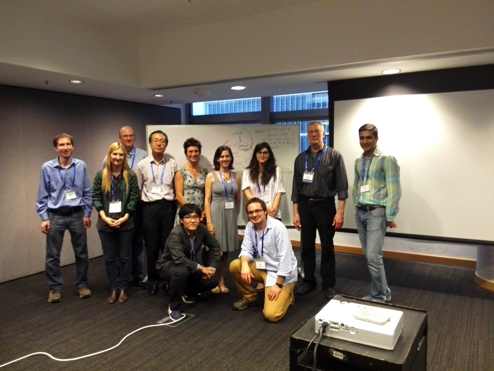

The 1st International Workshop on Context for Software Development was held on November 16, 2014 in Hong Kong, collocated with FSE 2014. Thank you to all of the CSD'14 participants for joining our discussion and making our workshop a success. A special thanks to Jim Herbsleb for inspiring our discussions through your insightful keynote presentation.
Papers and discussion threads available in the CSD14 Google Group
Jim's keynote slides
